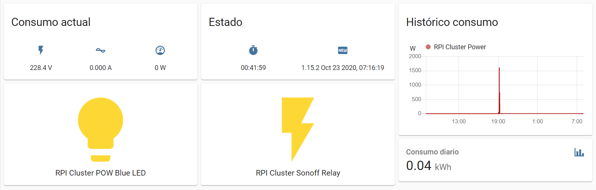
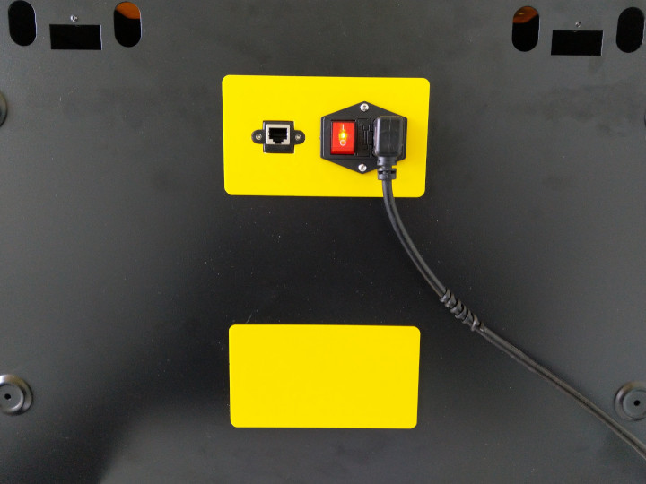
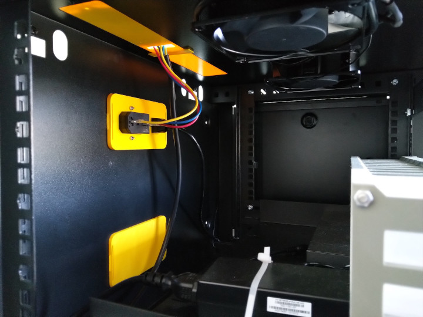
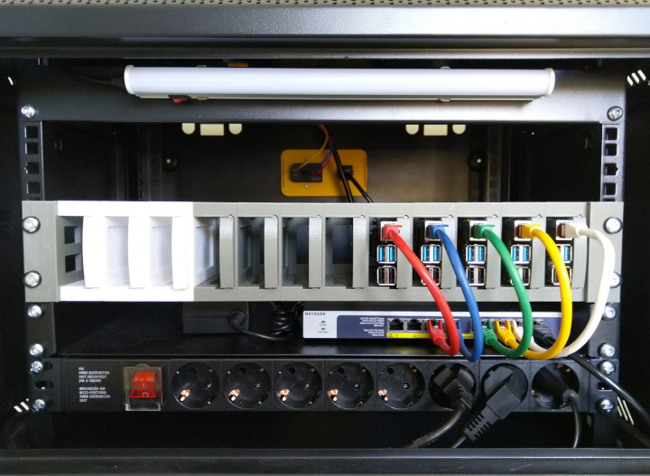

Monto un cluster Kubernetes con Raspberry Pi (parte IV)

Esta es una serie de posts en la que voy a explicar cómo he montado un cluster de Kubernetes utilizando Raspberry Pi y algún ejemplo de uso.
| Parte | Título |
|---|---|
| P01 | Hardware |
| P02 | Sistema Operativo y Docker |
| P03 | Cluster K3S |
| P04 | Consumo eléctrico |
| P05 | (proximamente) |
Introducción
En un post anterior de esta serie ya mencioné la primera disyuntiva a la que me enfrenté: cloud vs. on premise. En ese momento tuve en cuenta los costes de ambas alternativas, aunque la comparativa fue poco precisa, ya que para la opción on premise no tuve en cuenta el coste eléctrico para mantener el cluster encendido. Es por esto que desde entonces he buscado la manera de medir el gasto eléctrico del cluster.
Desde un principio era totalmente consciente de que el proyecto del cluster me iba a llevar varios meses, y eso teniendo únicamente en cuenta únicamente el tiempo de investigación, prueba y aprendizaje. Si evoluciona como espero, el cluster se convertirá en una pieza central y tendrá un uso continuado. Mi intención es utilizarlo para ejecutar en él algunas aplicaciones que uso habitualmente y que tengo desperdigadas en varias raspberry por la casa, como por ejemplo el Home Assistant que se menciona en este post.
Teniendo en cuenta que el cluster va a estar en funcionamiento ininterrumpidamente, considero que sería muy interesante medir el consumo eléctrico y calcular su coste. De esta forma podría hacer una comparativa más precisa entre el coste de un cluster en el cloud y el coste de este cluster.
¿Cómo medir el consumo eléctrico?
Para medir el consumo del cluster me he decantado por un Sonoff Pow R2. Lo he colocado “antes” de la regleta que alimenta todos los elementos del cluster. De esta forma toda la corriente necesaria para hacer funcionar el cluster: luces, ventilación, raspberry, switch… pasará a través del Sonoff y podrá ser contabilizada de forma global.

Para acoplar el Sonoff a la caja del cluster he diseñado unas piezas y las he imprimido con mi impresora 3D. He decidido inicialmente dejar el Sonoff en el exterior para tener una mejor cobertura WiFi ¿La caja del cluster actuaría como una caja Faraday? En este caso he preferido ser pruedente y dejarlo incialmente por fuera, aunque no sea lo más estético. En un futuro quizás me anime a rediseñar las piezas para dejar el Sonoff en el interior de la caja del cluster.
De nada sirve medir el consumo si no se realiza un registro del mismo. Para realizar el registro del consumo eléctrico contabilizado por el Sonoff he aprovechado una instancia de Home Assistant que tengo para la domótica de mi casa. De esta forma puedo disponer fácilmente de un panel para visualizar dicho consumo. En este post no voy a explicar cómo instalar Home Assistant, aunque sí que voy a describir algunas de las configuraciones que he tenido que cambiar.
Sonoff Pow R2
Este es un dispositivo barato que podría definirse como un interruptor “inteligente” que puede controlarse via WiFi y que permite medir el consumo eléctrico. En este caso no lo utilizo como interruptor, sino únicamente lo uso para medir el consumo. La forma de “anular” el interruptor (con software) es configurarlo de tal forma que esté siempre “encendido”. Otra forma más invasiva de conserguirlo sería desoldar el relay y puentearlo.
Sonoff proporciona una aplicación móvil a través de la cual se pueden controlar los diferentes dispositivos de la marca, programarlos y visualizar la información que generan. Para que todo esto sea posible, la información generada por los dispositivos viaja hasta los servidores de la empresa y desde ahí a los dispositivos móviles.
Sin embargo, ni me interesa que mis datos pasen por un servidor de un tercero, ni tengo interés en usar una aplicación móvil adicional, porque lo que quiero es integrarlo con Home Assistant. La ventaja de Home Assistant es que me permite integrar dispositivos de distintos fabricantes, tener toda la domótica centralizada y utilizar una única aplicación para controlar todo. En este caso, tiene la ventaja añadida de que los datos no pasan por ningún servidor ajeno, se quedan en casa.
¿Cómo integrar Sonoff con Home Assistant?
ESPHome es la respuesta!
ESPHome es un sistema que permite controlar de forma remota dispositivos ESP8266 y ESP32. Y casualmente los dispositivos Sonoff llevan un chip ESP8266. Realmente no es casualidad, esto es algo que investigué antes de decidirme a comprar el Sonoff Pow R2. Al descubrir ESPHome y lo fácil que era integrarlo con Home Assistant, la decisión estaba clara.
La integración de ESPHome con Home Assistant es muy sencilla y consiste en instalar un add-on en Home Assistant. La instalación del add-on es muy sencilla pero he tenido problemas de acceso a la interfaz a través de NGINX, debidos al uso de WebSockets que hace el add-on de ESPHome. Para solucionarlo he incluído la siguiente configuración en NGINX.
Programación del Sonoff
Para poder controlar un dispositivo con el chip ESP8266 mediante ESPHome hay que flashear en el chip un binario con el código de ESPHome. Para flashear dicho binario he utilizado esphome-flasher. En imprescindible un adaptador serie USB a TTL para poder conectar el dispositivo a un PC y flashear el código. Yo he utilizado un adaptador CH340G. Los drivers de los adaptadores se encuentran accesibles aquí.
¿Cómo obtenemos el binario con el código a flashear?
Esto es una tarea muy sencilla, gracias a ESPHome que lo simplifica al máximo. Simplemente hay que generar un fichero yaml con la configuración y comportamiento que queramos que tenga el dispositivo. ESPHome se encarga de generar un binario con el código correspondiente al contenido de dicho fichero yaml.
Este es el fichero yaml que he utilizado en este caso:
esphome:
name: rpicluster_power
platform: ESP8266
board: esp01_1m
# WiFi connection
wifi:
ssid: !secret wifi_ssid
password: !secret wifi_password
# Enable fallback hotspot (captive portal) in case wifi connection fails
ap:
ssid: "Rpicluster Sonoff POW R2"
password: "rpiclustersonoffpowr2"
# Enable logging
logger:
baud_rate: 0
# Enable Home Assistant API
api:
# Enable over-the-air updates
ota:
# Enable Web server
web_server:
port: 80
uart:
rx_pin: RX
baud_rate: 4800
sensor:
- platform: wifi_signal
name: "RPI Cluster WiFi Signal"
update_interval: 15s
icon: mdi:wifi
- platform: uptime
name: "RPI Cluster Uptime"
# Power sensor
- platform: cse7766
update_interval: 5s
# Current sensor
current:
name: "RPI Cluster Current"
icon: mdi:current-ac
unit_of_measurement: A
accuracy_decimals: 3
# Voltage sensor
voltage:
name: "RPI Cluster Voltage"
icon: mdi:flash
unit_of_measurement: V
accuracy_decimals: 1
# Power sensor
power:
name: "RPI Cluster Power"
icon: mdi:gauge
unit_of_measurement: W
accuracy_decimals: 0
id: rpiclusterpower
- platform: total_daily_energy
name: "RPI Cluster Daily Energy"
power_id: rpiclusterpower
filters:
- multiply: 0.001
unit_of_measurement: kWh
icon: mdi:chart-bar
time:
- platform: homeassistant
id: homeassistant_time
interval:
- interval: 10s
then:
if:
condition:
wifi.connected:
then:
- light.turn_on: led
else:
- light.turn_off: led
binary_sensor:
# Binary sensor for the button press
- platform: gpio
name: "RPI Cluster Power Button"
pin:
number: GPIO0
mode: INPUT_PULLUP
inverted: true
on_press:
- switch.toggle: relay
- platform: status
name: "RPI Cluster Status"
switch:
- platform: gpio
name: "RPI Cluster Sonoff Relay"
id: relay
pin: GPIO12
restore_mode: RESTORE_DEFAULT_ON
- platform: restart
name: "RPI Cluster Sonoff Restart"
output:
- platform: esp8266_pwm
id: pow_blue_led
pin:
number: GPIO13
inverted: True
light:
- platform: monochromatic
name: "RPI Cluster POW Blue LED"
output: pow_blue_led
id: led
text_sensor:
- platform: version
name: "RPI Cluster POW Version"
La información de los pines de entrada/salida del sonoff se encuentra en la documentación.
Quiero destacar que el sonoff únicamente hay que conectarlo al pc para flashearlo la primera vez. En el yaml anterior se habilita OTA (over-the-air), lo que permite actualizar el código a través de la conexión WiFi, sin necesidad de volver a abrir el dispositivo y desmontarlo de donde estuviera.
Panel de control
Gracias a la integración de ESPHome con Home Assistant es muy sencillo crear un panel de control como el que se ve en la siguiente imagen:

En el panel anterior se dispone de:
- Consumo actual
- Corriente
- Potencia
- Voltaje
- Estado
- Tiempo en marcha ( ver template en anexo )
- Versión de ESPHome en el sonoff
- Histórico de consumo
- Consumo diario
- Estado y control del led azul
- Este led lo utilizo para representar la conectividad a la WiFi (encendido significa conectado)
- Estado y control del relay
El pico de consumo de más de 1500W no se corresponde a un uso normal del cluster. Se corresonde a unas pruebas de estuve realizando para calibrar el Sonoff. La calibración del Sonoff queda fuera del ámbito de este post y lo explicaré en otro momento.
Conclusión
El principal objetivo de construir este cluster era didáctico. A día de hoy no tengo claro si esta va a ser su única finalidad o si, una vez terminado, lo voy a utilizar con otros fines, puesto que ideas no me faltan. Conocer el consumo eléctrico y su consiguiente coste económico es una variable que voy a tener muy en cuenta a la hora de decidir el uso del cluster a medio-largo plazo.
Anexo
Configuración NGINX para WebSockets de ESPHome
location /api/hassio_ingress {
resolver 127.0.0.11 valid=30s;
# Home Assistant IP
set $upstream_app 192.168.86.4;
# Home Assistant Internal Port
set $upstream_port 8123;
# Home Assistant Internal Protocol
set $upstream_proto http;
proxy_pass $upstream_proto://$upstream_app:$upstream_port;
# Home Assistant External Host:Port
proxy_set_header Host $host:9443;
proxy_http_version 1.1;
proxy_set_header Upgrade $http_upgrade;
proxy_set_header Connection "upgrade";
}
Drivers adaptador USB a TTL
Template para el tiempo en marcha
Por defecto el tiempo que lleva encendido el sonoff se envía en segundos. Este dispositivo está pensado para estar contínuamente encendido enviando las lecturas, independientemente de si el cluster está en marcha o no. Por este motivo no tiene mucho sentido visualizar en el panel esta información en crudo. Para transformar este dato en otro que aporte más valor he creado el siguiente template en el Home Assistant:
sensor:
- platform: template
sensors:
rpi_cluster_pow_uptime_readable:
friendly_name: "RPI Cluster Uptime"
icon_template: "mdi:timer"
value_template: >-
{% set uptime = states.sensor.rpi_cluster_pow_uptime.state | int %}
{% set days = (uptime / 86400) | int %}
{%- if days > 0 -%}
{{ days }} days, {{ (uptime - (days * 86400)) | int | timestamp_custom('%H:%M:%S', false) }}
{%- else -%}
{{ uptime | int | timestamp_custom('%H:%M:%S', false) }}
{%- endif -%}
Si lleva más de un día encendido, se visualizará el número de días que lleva encendido junto con las horas, minutos y segundos. Si lleva menos de un día, simplemente se visualizarán las horas, minutos y segundos.
Este template podría mejorarse aún más teniendo en cuenta meses y años
Piezas para la caja del cluster
Para realizar el diseño de todas las piezas he utilizado OnShape. Todos los diseños que he realizado para la caja son públicos y encuentran disponibles aquí.
Como se puede ver en las siguientes imágenes, las piezas para albergar el Sonoff no son las únicas que he diseñado para la caja del cluster. También he diseñado una tapa para una de las aberturas traseras y otra tapa para albergar tanto la toma de corriente como la toma de red de todo el cluster:


Estoy muy contento con el resultado final, la verdad que ha quedado todo muy organizado y con un mínimo de cables:
